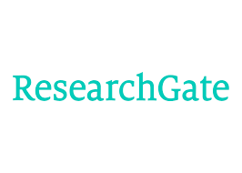

Sebagai seorang mahasiswa, kamu akan selalu terlibat dalam aktivitas menulis, terutama ketika membuat karya ilmiah. Berbeda dengan gaya penulisan bebas yang umumnya digunakan dalam karya tulis populer, penulisan karya ilmiah memiliki aturan ketat yang harus diikuti, seperti penggunaan tata bahasa yang tepat dan pencantuman sumber referensi penelitian ilmiah, seperti catatan kaki dan daftar pustaka. Namun, penting untuk diingat bahwa tidak semua sumber yang digunakan sebagai referensi dalam karya tulis ilmiah dapat diterima, karena mereka harus memiliki kredibilitas dan integritas yang baik.
Oleh karena itu, berikut 5 situs yang bisa kamu gunakan untuk mencari referensi tugas karya tulis ilmiahmu.
1. Google Cendikia (Google Scholars)
Google Cendekia, yang juga dikenal sebagai Google Scholar, adalah layanan yang memungkinkan pengguna untuk mencari materi pelajaran dalam berbagai format publikasi. Diluncurkan pada tahun 2004, Google Cendekia mengindeks jurnal daring dan publikasi ilmiah lainnya. Dengan Google Cendekia, pengguna dapat dengan mudah mencari literatur akademis di berbagai bidang ilmu, termasuk makalah yang telah melalui proses penelaahan oleh rekan sejawat, tesis, buku, abstrak, dan artikel dari berbagai sumber seperti penerbit akademis, komunitas profesional, pusat data pracetak, universitas, dan organisasi akademis.
2. JSTOR (Journal Storage)
JSTOR, yang biasanya disebut jay-stor, singkatan dari Journal Storage, adalah sebuah perpustakaan digital yang berdiri sejak tahun 1995. Pada awalnya, perpustakaan ini berfokus pada jurnal akademik yang telah didigitalkan. Namun, sekarang koleksinya telah berkembang untuk mencakup buku-buku, sumber-sumber primer, dan juga jurnal-jurnal terbaru. Layanan digital ini memungkinkan pencarian teks lengkap untuk lebih dari seribu jurnal. Lebih dari 7.000 institusi di 150 negara memiliki akses ke JSTOR. Sebagian besar akses ini melalui langganan, tetapi ada juga beberapa konten lama yang sudah masuk ke domain umum dan bisa diakses secara gratis. Pada tahun 2012, JSTOR juga meluncurkan program yang memberikan akses terbatas dan gratis ke artikel-artikel lama bagi para sarjana dan peneliti yang terdaftar.
3. Researchgate

ResearchGate adalah situs jejaring sosial dan alat kolaborasi
yang disediakan secara gratis bagi para ilmuwan dari berbagai
disiplin ilmu dalam bidang sains. Situs ini menawarkan berbagai
aplikasi web, termasuk pencarian semantik yang memungkinkan pengguna
untuk mencari abstrak penelitian, berbagi berkas, berbagi basis data
publikasi, forum, diskusi metodologi, serta berbagai aplikasi
lainnya.
Sejak Mei 2008, lebih dari 1.400.000 ilmuwan dari 196
negara telah menggunakan ResearchGate. Yang membuat ResearchGate
berbeda dari situs dan alat kolaborasi serupa adalah kemampuannya
dalam pengembangan alat pencarian Internet semantik. Alat ini dapat
mencari makalah penelitian dari sumber internal dan basis data
eksternal terkemuka seperti PubMed, CiteSeer, arXiv, NASA Library,
dan lainnya. Alat pencarian Internet ini berfokus pada analisis
kata-kata dan ungkapan yang lebih luas daripada alat pencarian
Internet konvensional, dengan menganalisis seluruh abstrak makalah
penelitian, sehingga menghasilkan hasil pencarian yang lebih akurat.
4. DOAJ (Directory of Open Access Journals)
Directory of Open Access Journals (DOAJ), atau
Direktori Jurnal Akses Terbuka, merupakan situs web yang menyusun
daftar jurnal yang tersedia dalam akses terbuka, dikelola oleh
Infrastructure Services for Open Access (IS4OA). Proyek ini
menetapkan bahwa jurnal akses terbuka adalah jurnal ilmiah dan
akademik yang memenuhi standar kualitas tinggi melalui proses
penelaahan oleh rekan sejawat atau pengendalian kualitas editorial.
Selain itu, jurnal-jurnal ini tidak membebankan biaya kepada pembaca
atau institusi untuk mengaksesnya.
DOAJ mengadopsi definisi hak akses terbuka yang dikemukakan oleh
Budapest Open Access Initiative, yang memberikan hak kepada pengguna
untuk "membaca, mengunduh, menyalin, mendistribusikan, mencetak,
mencari, atau menautkan ke naskah lengkap artikel-artikel tersebut"
dalam jurnal yang terdaftar di dalam DOAJ.
5. Perpusnas (Perpustakaan Nasional) RI

Salah satu layanan yang disediakan oleh pemerintah Indonesia untuk memfasilitasi kegiatan akademik adalah digitalisasi buku dan karya tulis ilmiah secara gratis yang dapat diakses melalui layanan digital perpusnas. Berbagai macam literatur ilmiah bisa dengan mudah kamu akses melalui laman e-resources.perpusnas.go.id atau melalui aplikasi ipusnas yang dapat diunduh melalui smartphone.
Itula 5 situs website yang dapat kamu manfaatkan untuk mencari sumber referensi jurnal dan penelitian yang akan sangat membantu dalam menyelesaikan tugas karya tulis ilmiahmu. Semoga bermanfaat!